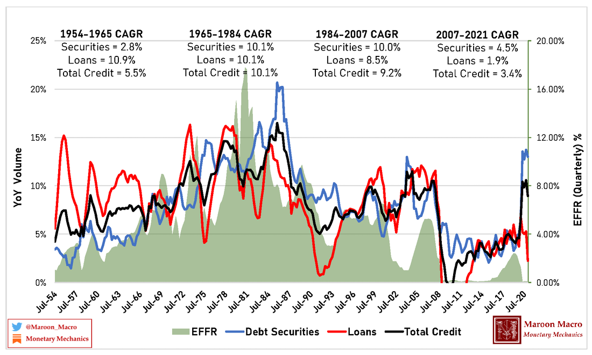

There is a positive correlation between interest rate and volume of credit
- tags
- Doxa
When people think about "easy money" they usually mean high volume of credit, and they make the underlying assumption that if interests rates are low, volumes are going to be high and vice-versa.
Demand side: People want to borrow at low interest rates Supply side: Banks stil decide who to lend to
There is a high correlation between interest rate and volume of credit, as implied by the followig curve from Monetary Mechanics:

Interests rates are high when everyone is bidding for funding to take advantage of differential between current interest rates and future returns on investment.